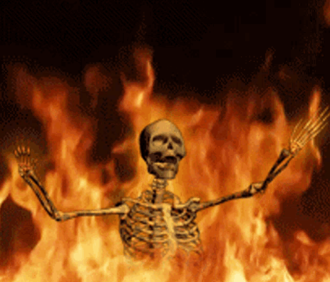
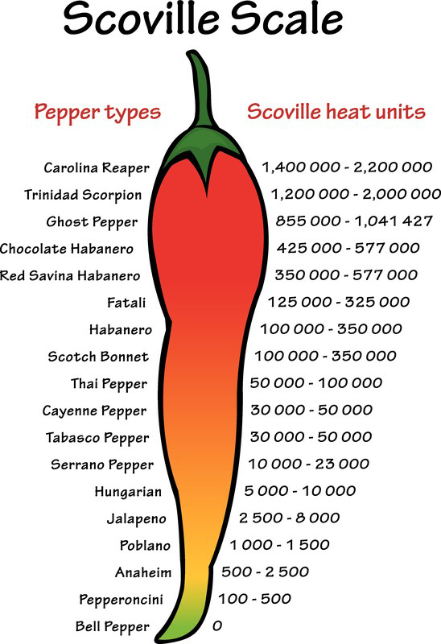
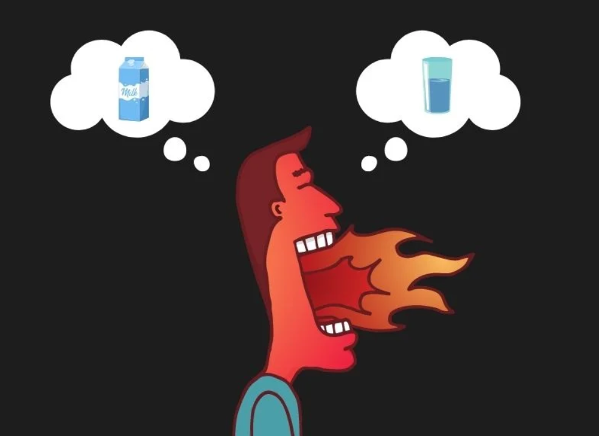
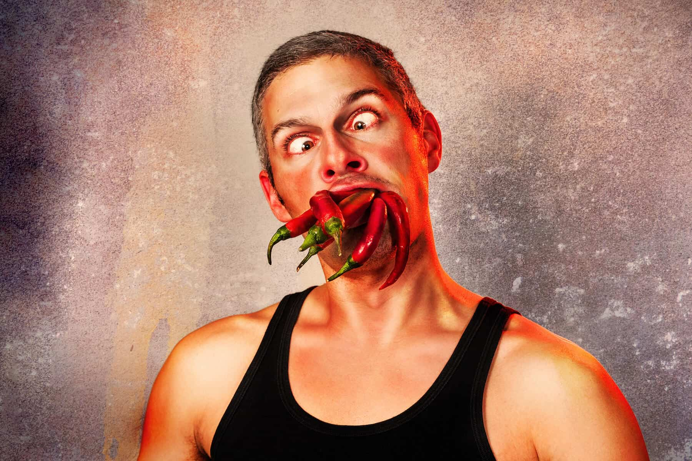
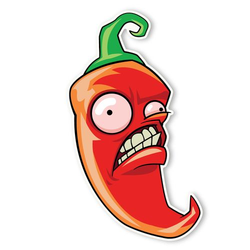

The feeling of spiciness comes from a chemical called capsaicin, which releases as a fine spray when you bite into food that contains it. It latches onto and triggers your heat receptors, making your nervous system think that you are overheating. That, is the spiciness we feel.

Pepper plants have evolved to have capsaicin, in order to deter mammals from eating it. This is because mammals have molars, which grind and destroy seeds, preventing them from germinating and growing into more pepper plants. Birds, which will not destroy seeds, are not affected by capsaicin, ensuring that the plant will be able to survive.

The scoville scale is the measurement of spiciness in chili peppers and other substances. The unit of measurement used for it is Scoville heat units. It was created by the American pharmacist Wilbur Scoville, and is a subjective assessment based on the sensitivity of people who are experienced in eating hot chilis.
An example is shown below.

When you want to wash away the spiciness, usually you would drink water, or milk.
If you have done this before, you would have noticed that milk does the job much easier than water.
This is because capsaicin is hydrophobic, which means it repels water, so water cannot easily wash
away
capsaicin and get rid of the pain.
Milk contains fat, which can dissolve the fat soluble capsaicin, and casein.
Casein is a protein which helps to break down the bonds capsaicin forms on your nerve receptors, and
help
wash the spiciness away.

So capsaicin makes people feel pain. Why do they still like consuming it? That is because the body releases endorphins to numb the pain that is experienced. The pleasure from the endorphins makes people enjoy eating spicy food.

Quiz time!
Correct Answers: 0
Whack-a-chili!
